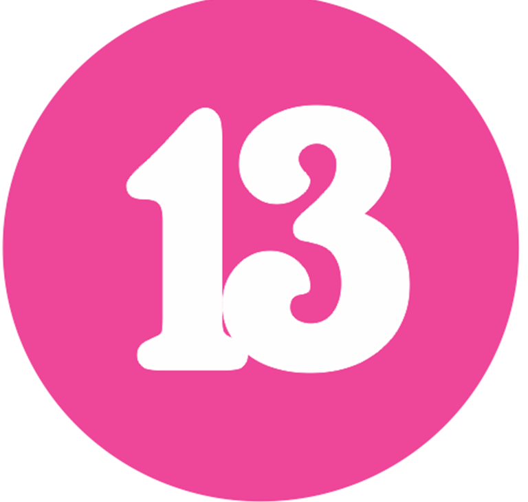

Taylor Swift More taylor hehe
Taylor alison swift(born December 13, 1989) is an American singer-songwriter. Her narrative songwriting, which is often inspired by her personal experiences, has received widespread media coverage and critical praise. Based in Nashville, Tennessee, Swift signed with Sony/ATV Tree Publishing in 2004 to become a songwriter and with Big Machine Records in 2005 to become a country music singer. Her eponymous debut studio album (2006) included the Hot Country Songs number-one singles "Our Song" and "Should've Said No" and the pop radio crossover "Teardrops on My Guitar". Swift rose to mainstream prominence with her country pop second studio album, Fearless (2008), which was certified Diamond by the Recording Industry Association of America (RIAA) and featured the top-five singles "Love Story" and "You Belong with Me". Her third studio album, Speak Now (2010), blended country pop with rock elements and furthered her crossover success with the top-ten singles "Mine" and "Back to December". Swift's fourth studio album, Red (2012), experimented beyond country, incorporating pop, rock, and electronic genres. She completely transitioned to pop with her synth-pop fifth studio album, 1989 (2014); its successor, Reputation (2017), expanded on the electropop sound with urban influences. Swift released her next studio album, Lover, in 2019, while she was in a dispute over the ownership of her back catalog after her Big Machine contract expired. She explored indie folk and alternative rock on her 2020 studio albums, Folklore and Evermore. These six albums spawned a string of international top-ten singles, including "We Are Never Ever Getting Back Together", "I Knew You Were Trouble", "Shake It Off", "Blank Space", "Bad Blood", "Look What You Made Me Do", "Me!", "You Need to Calm Down", "Cardigan", and "Willow". She also released the acclaimed documentaries Miss Americana and Folklore: The Long Pond Studio Sessions in 2020. Swift is one of the best-selling music artists of all time, with over 200 million records sold worldwide. Her accolades include 11 Grammy Awards (including three Album of the Year wins), a Primetime Creative Arts Emmy Award, two Brit Awards, 11 MTV Video Music Awards (including two Video of the Year wins), 12 Country Music Association Awards, 25 Billboard Music Awards (the most wins by a woman), 32 American Music Awards (the most wins by an artist) and 49 Guinness World Records. She ranked eighth on Billboard's Greatest of All Time Artists Chart (2019) and was listed on Rolling Stone's 100 Greatest Songwriters of All Time (2015). Swift has been included in various power rankings, such as Time's annual list of the 100 most influential people in the world (2010, 2015 and 2019) and Forbes Celebrity 100 (placing first in 2016 and 2019). She was named Woman of the Decade (2010s) by Billboard and Artist of the Decade (2010s) by the American Music Awards, and has been recognized for her philanthropic [

<3
